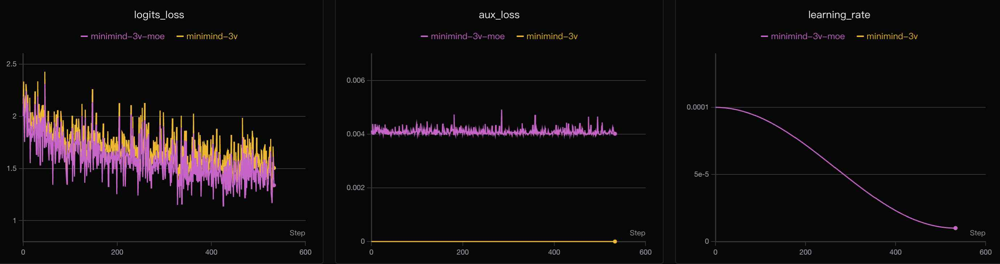
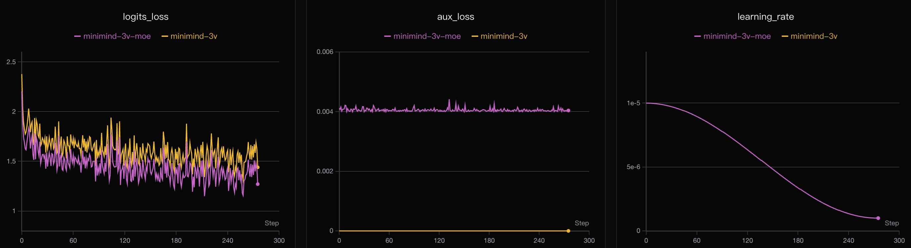

1. 环境和资源
pip install -r requirements.txt -i https://pypi.tuna.tsinghua.edu.cn/simple
# 下载视觉编码器
modelscope download --model gongjy/siglip2-base-p32-256-ve --local_dir ./model/siglip2-base-p32-256-ve
# 下载 MiniMind 语言模型权重，作为 VLM 训练底座
modelscope download --model gongjy/minimind-3v-pytorch llm_768.pth --local_dir ./out如果使用 HuggingFace，也可以从 MiniMind-V Collection 选择对应模型目录。视觉编码器需要放在 model/siglip2-base-p32-256-ve/。
2. 两条训练路径
快速路径：直接 SFT
SFT 数据已包含 Pretrain caption 子集，适合先跑通流程。
cd trainer
python train_sft_vlm.py --epochs 2 --from_weight llm稳妥路径：Pretrain + SFT
先让 Projector 学会基础图文对齐，再进入指令微调。
cd trainer
python train_pretrain_vlm.py --epochs 2 --from_weight llm
python train_sft_vlm.py --epochs 2 --from_weight pretrain_vlm3. 冻结策略
| 参数 | 训练范围 | 适用阶段 | 理由 |
|---|---|---|---|
--freeze_llm 2 | 仅训练 vision_proj | Pretrain 默认 | 干净完成视觉到语言空间的初始对齐。 |
--freeze_llm 1 | vision_proj + LLM 首尾层 | SFT 默认 | 融合视觉 token，同时保护中间层语言能力。 |
--freeze_llm 0 | 除视觉编码器外全参可训 | 实验用 | 灵活但风险更高，小模型容易遗忘原语言能力。 |
4. 默认超参数
| 脚本 | batch | 学习率 | max_seq_len | from_weight |
|---|---|---|---|---|
train_pretrain_vlm.py | 16 | 4e-4 | 450 | llm |
train_sft_vlm.py | 4 | 5e-6 | 768 | pretrain_vlm |
训练脚本使用 cosine 风格学习率衰减、梯度裁剪、bf16/float16 混合精度，并支持 torch.compile。
5. 断点续训和多卡
# 中断后恢复
python train_sft_vlm.py --epochs 4 --from_resume 1
# 单机 N 卡 DDP
torchrun --nproc_per_node N train_sft_vlm.py保存时会同时写出 out/*.pth 和 checkpoints/*_resume.pth。resume 文件保存优化器、scaler、epoch、step 和日志 id；GPU 数量变化时，脚本会按 world size 自动折算 step。
6. Loss 曲线参考

Pretrain：主要观察 Projector 是否快速完成视觉语言对齐。

SFT：学习率更低，目标是指令遵循、细节问答和语言能力平衡。
README 记录：单张 NVIDIA 3090 上，SFT 跑完 1 个 epoch 约 2 小时，成本按当时云租价格估算约 3 元。实际速度会受数据读取、CUDA、磁盘和显存策略影响。